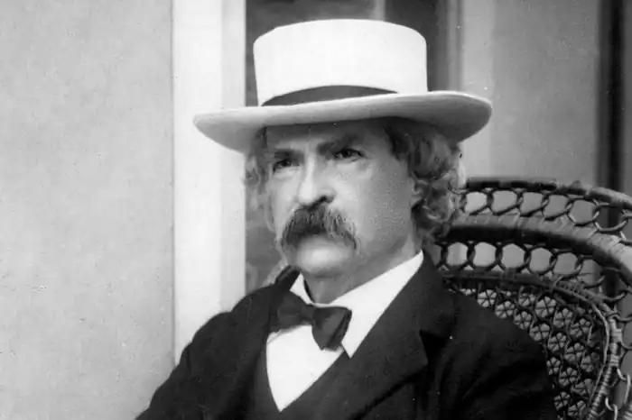
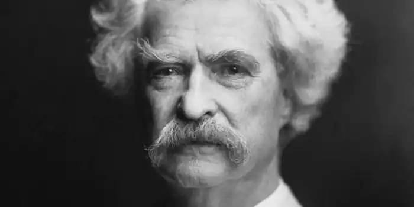
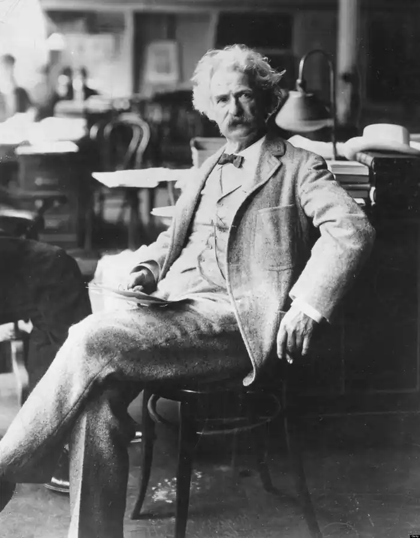
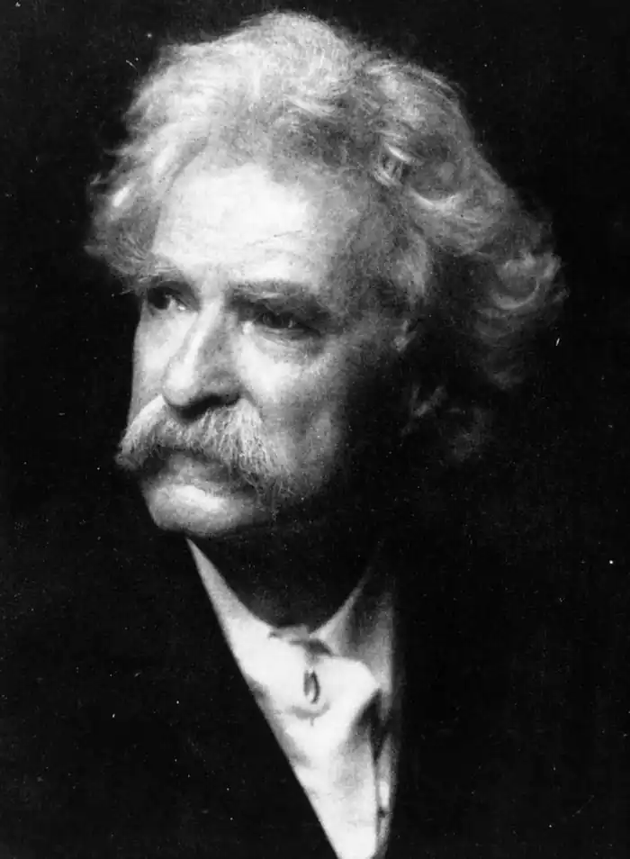
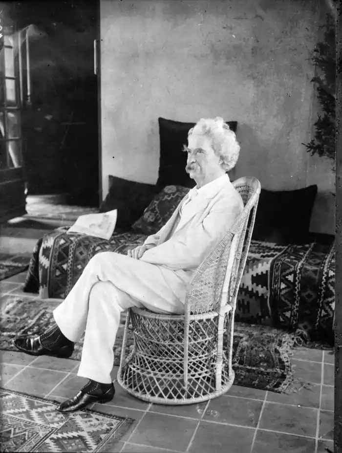
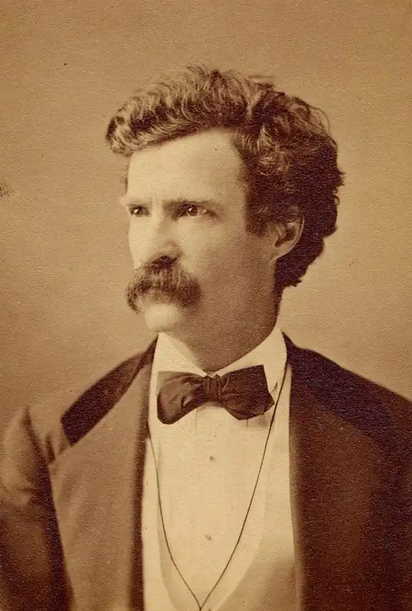

День народження: 30.11.1835 року
Місце народження: Флорида, Міссурі, США
Дата смерті: 21.04.1910 року Твен пишався суспільним визнанням, особливо цінував присудження йому наукового ступеня доктора літератури Оксфордського університету (1907), але пізнав і гіркоту життя. Його останнім, найбільш гостра викриття "проклятого людського роду" – Листи з Землі (Letters From the Earth), які не публікувалися дочкою Кларою до 1962. ТВЕН, МАРК (Twain, Mark; псевд.; наст ім'я – Семюел Лэнгхорн Клеменс, Samuel Langhorne Clemens) (1835-1910), американський письменник. Народився 30 листопада 1835 в селищі Флорида (шт. Міссурі). Дитинство провів у містечку Ханнібал на Міссісіпі. Був учнем складача, пізніше разом з братом видавав газету в Ханнибале, потім в Мескатине і Кеокуке (шт. Айова). У 1857 став учнем лоцмана, втіливши свою дитячу мрію "пізнати ріку", в квітні 1859 отримав права лоцмана. У 1861 переїхав до брата в Неваду, майже рік був старателем на срібних копальнях. Написавши кілька гуморесок для газети "Терріторіал ентерпрайз" у Вірджинія-Сіті й у серпні 1862 одержав запрошення стати її співробітником. Для псевдонім узяв вираз лотів на Міссісіпі, выкликавших "Мірка 2", що означало достатню глибину для безпечного плавання. У травні 1864 Твен поїхав у Сан-Франциско, два роки працював у каліфорнійських газетах, в т. ч. кореспондентом каліфорнійської "Юніон" на Гавайських островах. На гребені успіху своїх нарисів виступав з гумористичними лекціями про Гаваях під час тримісячного турне по містах Америки. Від газети "Альта Каліфорнія" брав участь у середземноморському круїзі на пароплаві "Квакер-Сіті", зібрав матеріал для книги Простаки за кордоном (The Innocents Abroad), подружився з Ч. Ленгдоном з Елмайра (шт. Нью-Йорк) і 2 лютого 1870 одружився на його сестрі Олівії. У 1871 Твен переїхав у Хартфорд (шт. Коннектикут), де прожив 20 років, найщасливіші свої роки. У 1884 році він заснував видавничу фірму, номінально очолену Ч. Л. Вебстером, чоловіком його племінниці. Серед перших публікацій фірми – Пригоди Гекльберрі Фінна (Huckleberry Finn, 1884) Твена стали бестселером Спогади (Мемуари, 1885) вісімнадцятого президента США У. С. Гранту. Під час економічної кризи 1893-1894 видавництво розорилося. В цілях економії і можливості заробітків у 1891 Твен з родиною переїхав до Європи. За чотири роки борги були виплачені, матеріальне становище сім'ї вирівнялося, у 1900 р. вони повернулися на батьківщину. Тут в 1904 році померла його дружина, а напередодні Різдва 1909 Реддинге (шт. Коннектикут) від нападу епілепсії померла дочка Джин (ще в 1896 від менінгіту померла улюблена дочка Сьюзі). Помер Марк Твен в Реддинге 21 квітня 1910. Твен пишався суспільним визнанням, особливо цінував присудження йому наукового ступеня доктора літератури Оксфордського університету (1907), але пізнав і гіркоту життя. Його останнім, найбільш гостра викриття "проклятого людського роду" – Листи з Землі (Letters From the Earth), які не публікувалися дочкою Кларою до 1962. Твен прийшов у літературу пізно. У 27 років став професійним журналістом, у 34 роки опублікував свою першу книгу. Ранні публікації (він почав друкуватися в 17 років) цікаві в основному як свідчення хорошого знання грубуватого гумору американської глибинки. З самого початку його газетні публікації несли риси художнього нарису. Він швидко втомлювався від репортажу, якщо матеріал не мав до гумору. Перетворення з талановитого любителя на справжнього професіонала відбулося після подорожі на Гаваї 1866. Важливу роль відіграло читання лекцій. Він експерементував, шукав нові, різноманітніші форми вираження, розраховував паузи, домагаючись точного відповідності задуму і результату. Ретельне шліфування усного слова залишилася і в його творчості. Подорож на "Квакер-Сіті" продовжив "гавайську школу". У Простаках за кордоном (1869), книзі, яка зробила його відомим в Америці, визначився вкрай простий лейтмотив творчості Твена – подорож у просторі. Обґрунтований в Простаках самим маршрутом поїздки, він збережеться також у книгах Загартовані (Roughing It, 1872, в рос. перекладі – без нічого, 1959), Пішки по Європі (A Tramp Abroad, 1880) і По екватору (Following the Equator, 1896). Самим вражаючим чином він використаний у Гекльберрі Фінне. Підступ до художньої прози був поступовим, обережним. Перший роман, Позолочений століття (The Gilded Age, 1874), написаний у співавторстві з Ч. Д. Уорнером. Дія роману, задуманого як сучасна соціальна сатира, спотикається об погано вписуються шматки стандартних вікторіанських сюжетів. Незважаючи на художнє недосконалість, роман дав назву періоду президентства Гранту. Тоді ж зустріч із другом дитинства нагадала Твену про їхні дитячі пригоди в Ханнибале. Після двох-трьох невдалих спроб, в їх числі оповідання у формі щоденника, він знайшов потрібний підхід і за 1874-1875, із перервами, написав роман Пригоди Тома Сойєра (The Adventures of Tom Sawyer, 1876), що створив йому репутацію майстра характерів та інтриги і чудового гумориста. Тому, за словами марка Твена, "втілення хлоп'яцтва". Фон повісті – автобіографічний, Санкт-Петербург – це Ханнібал. Однак персонажі аж ніяк не пласкі копії, але повнокровні характери, народжені уявою майстра, що згадує свою юність. З січня по липень 1875 в "Атлантік манслі" публікувалися Старі часи на Міссісіпі (Old Times on the Mississipi), у 1883 вони увійшли в книгу Життя на Міссісіпі (Life on the Mississipi, глави IV–XVII). Майже відразу по закінченні Тома Сойєра був задуманий Гекльберрі Фінн. У 1876 р. він був початий, кілька разів відкладався і нарешті опубліковано в 1884. У Гекльберрі Фінне, вищої творчої удачеТвена, розповідь ведеться від першої особи, вустами дванадцятирічного хлопчика. Вперше розмовну мову американської глибинки, перш вживаний тільки у фарсі і сатирі на звичаї простолюду, став засобом художнього зображення вертикалі довоєнного південного товариства – від аристократії до "дна". Серед книг, що передували Геку, – Принц і жебрак (The Prince and the Pauper, 1881), перша спроба створити історичне оповідання. Обмежений епохою, місцем і історичними обставинами, автор не пішов в сторону і не збився на бурлеск, і книга досі заворожує юних читачів. Навпаки, в Янкі при дворі короля Артура (A Connecticut Yankee at King arthur's Court, 1889) Твен дав волю своїм темпераментом сатирика. Його найсерйозніша історична проза, Особисті спогади про Жанну д'арк (Personal Recollections of Joan of Arc, 1896), зазнала невдачі. Твен ще спробував відродити світ своїх шедеврів в Простакові Вильсоне (Pudd'nhead Wilson, 1894), Тома Сойєра за кордоном (Tom Sawyer Abroad, 1894) і Тома Сойєра-сищика (Tom Sawyer, Detective, 1896), але знову зазнав невдачі. З оповідань, опублікованих в останні роки життя, найбільш примітний Людина, що спокусила Гедліберг (The Man that Corrupted Hadleyburg, 1898), а також гострі викривальні памфлети. Трактат Що таке людина? (What Is Man, 1906) – екскурс у філософію. Твори останніх років в основному не закінчені. Великі фрагменти автобіографії (він диктував її в 1906-1908) так і не були об'єднані в єдине ціле. Останнім сатиричний твір – повість " Таємничий незнайомець (The Mysterious Stranger) – опублікована посмертно в 1916 році по незавершеного рукопису. Фрагменти автобіографії надруковані в 1925 році і пізніше.